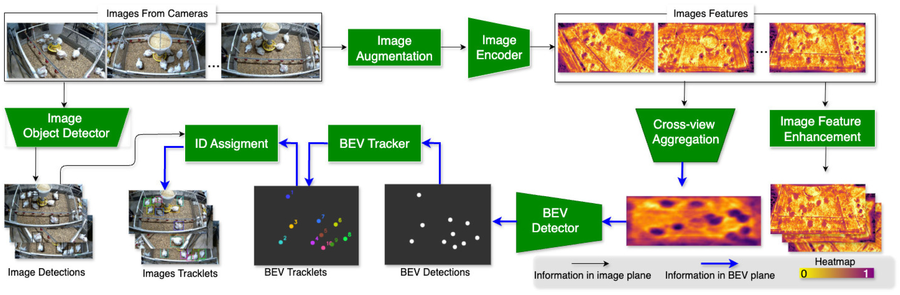
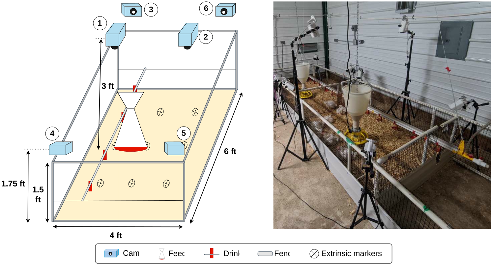
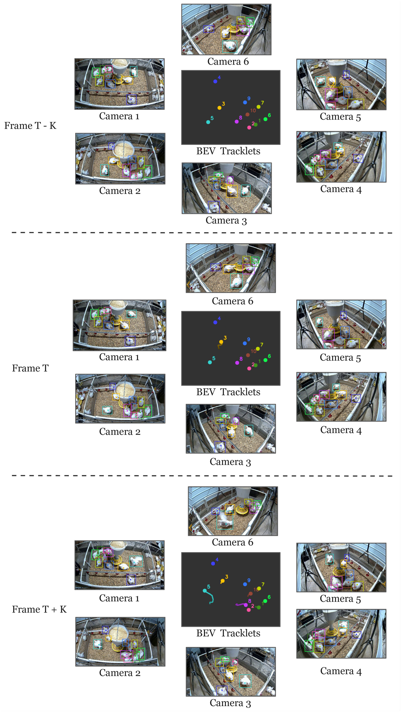
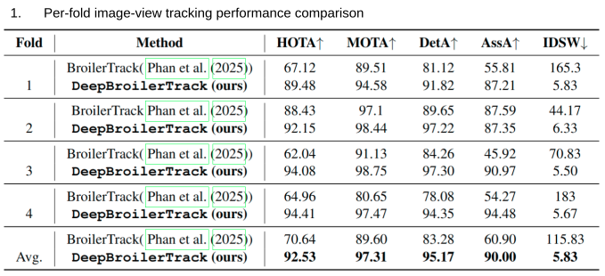
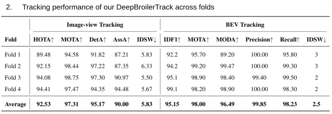
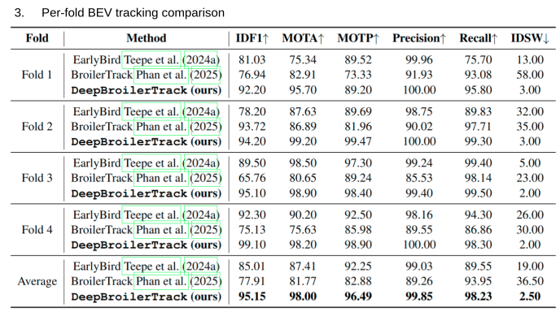

Reliable tracking of individual broilers in commercial poultry facilities is essential for large-scale welfare monitoring, behavior analysis, and precision breeding. Multi-camera systems have emerged to address challenges posed by occlusions, dense flock layouts, and strong appearance similarity. However, existing approaches often rely on hand-crafted association heuristics and cascade-style two-stage designs, which struggle to generalize in crowded and occlusion-heavy environments. To overcome these shortcomings, we propose DeepBroilerTrack, an end-to-end multi-camera tracking framework unifying early-stage feature fusion within a Bird’s-Eye View (BEV) representation. Our method leverages a camera-dropout augmentation strategy to improve cross-view generalization, aggregates multi-camera features into a unified BEV space for robust detection and temporal association, and projects BEV tracklets back to individual views through a learned ID assignment module to maintain identity consistency across all cameras. Experiments on a real-world broiler dataset demonstrate that our method significantly improves tracking stability and identity (ID) consistency over existing multi-camera baselines, offering a practical and scalable solution for intelligent poultry management in challenging production settings.
DeepBroilerTrack: End-to-End Automatic Tracking of Multiple Broilers Using Multiple Cameras
1 University of Arkansas · 2 Cobb-Vantress, Inc
Video Demonstration
The demo visualizes multi-chicken tracking using bounding boxes with corresponding identity labels. Unified ground-plane points map each detected chicken into a shared spatial reference, enabling consistent tracking across camera views.
Abstract
System overview

Experimental setup

Qualitative results

Quantitative results
Table 1 compares the proposed early-fusion BEV framework with the previous late-stage fusion approach. The updated method substantially reduces identity switches, demonstrating improved identity consistency and tracking stability. Although MOTA and DetA decrease slightly because of BEV projection errors, the unified spatial representation reduces occlusion and perspective-related identity fragmentation.

Table 2 summarizes the four-fold cross-validation results. The proposed method achieves an average MOTA of 98.00%, MODA of 96.49%, Precision of 99.85%, Recall of 98.23%, and only 2.5 identity switches. These results indicate highly accurate target detection with strong identity preservation across challenging multi-camera conditions.

Table 3 presents the per-fold comparison with existing multi-camera tracking methods. The results demonstrate that the proposed BEV-based approach delivers consistently strong tracking performance across the evaluation folds, validating the robustness of the early-fusion and multi-view geometric association strategy.

BibTeX
@article{vo2026deepbroilertrack,
title={DeepBroilerTrack: End-to-End Automatic Tracking of Multiple Broilers Using Multiple Cameras},
author={Vo, Hao and Phan, Thinh and Kidd, Michael T and Mason, James and Avendano, Santiago and Le, Ngan},
journal={Smart Agricultural Technology},
pages={102163},
year={2026},
publisher={Elsevier}
}